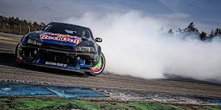
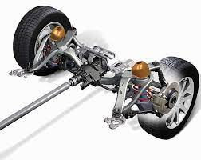

Дрифт это техника прохождения поворотов и вид автоспорта, характеризующийся использованием управляемого заноса на максимально возможных для удержания на трассе скорости и угла к траектории

Соревнования проводятся на сухом асфальте, трассах с большим количеством поворотов. Также вид автоспорта, основанный на зрелищности прохождения поворотов в заносе
Обычно используются автомобили с задним приводом. Возможны также переделки полноприводного автомобиля в заднеприводный.

Больше информации по ссылке (нажмите чтобы перейти)